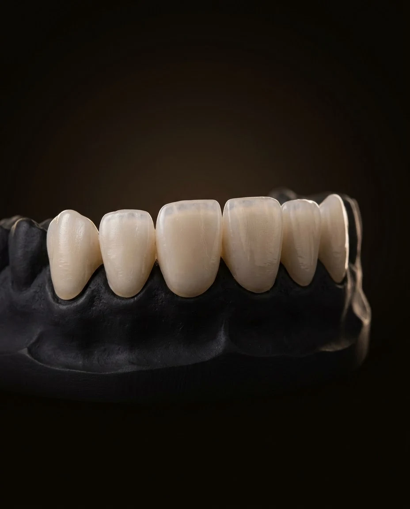
01
Эстетическая ортопедия
Коронки и виниры, восстановление разрушенных зубов. Работаю над естественной формой, гармоничным цветом и эстетикой улыбки.
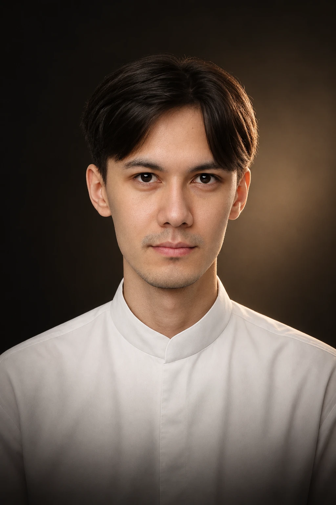
Стоматолог-ортопед · гнатолог
Помогаю восстановить разрушенные и утраченные зубы, улучшить эстетику улыбки и разобраться с проблемами прикуса и работы челюстного сустава.
Каждый план лечения начинается с диагностики, понимания ваших жалоб и обсуждения возможных решений.
01 — Направления работы

Коронки и виниры, восстановление разрушенных зубов. Работаю над естественной формой, гармоничным цветом и эстетикой улыбки.
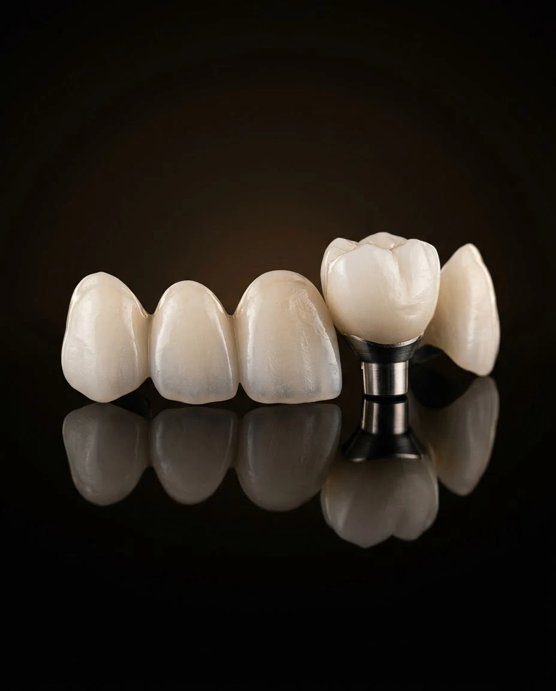
Восстановление зубов при множественных дефектах, в том числе на имплантатах. Планирование ортопедического лечения с учётом состояния зубов, прикуса и жевательной функции.
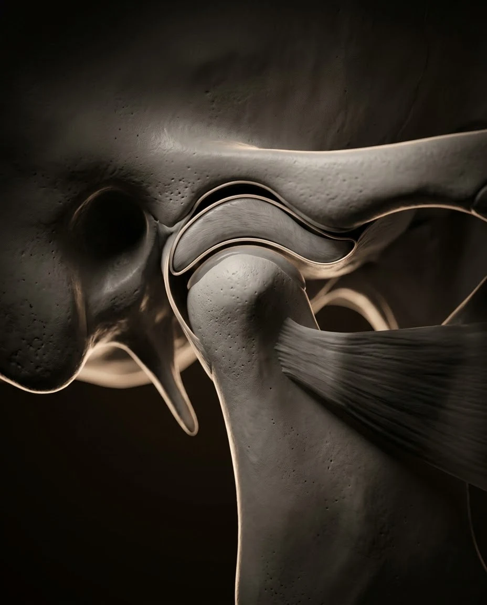
Гнатология изучает работу зубов, жевательных мышц и височно-нижнечелюстного сустава (ВНЧС).
Симптомы, при которых стоит обратиться за консультацией:
Эти симптомы могут иметь разные причины и не всегда связаны с дисфункцией ВНЧС. На консультации можно оценить ситуацию и обсудить, нужны ли дополнительные обследования.
Чаще всего пациенты приходят за эстетическим восстановлением передних зубов, восстановлением утраченных зубов и оценкой смыкания перед ортопедическим лечением.
02 — Работы
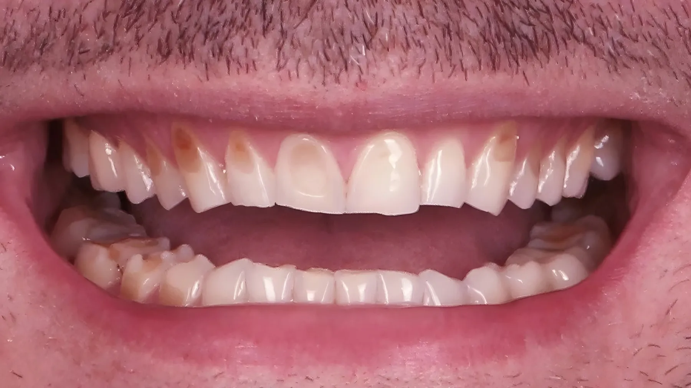
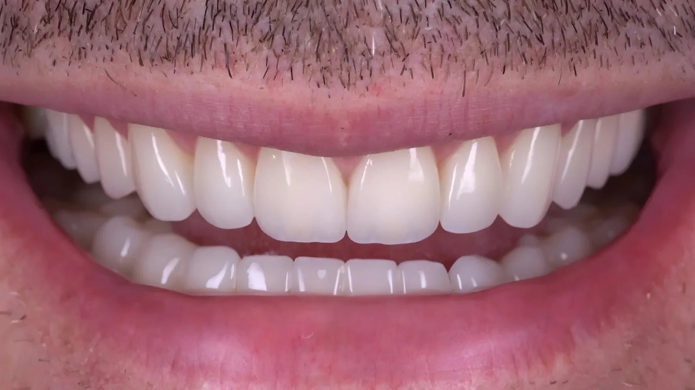
ДоПосле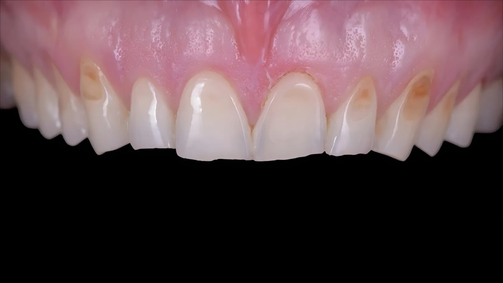
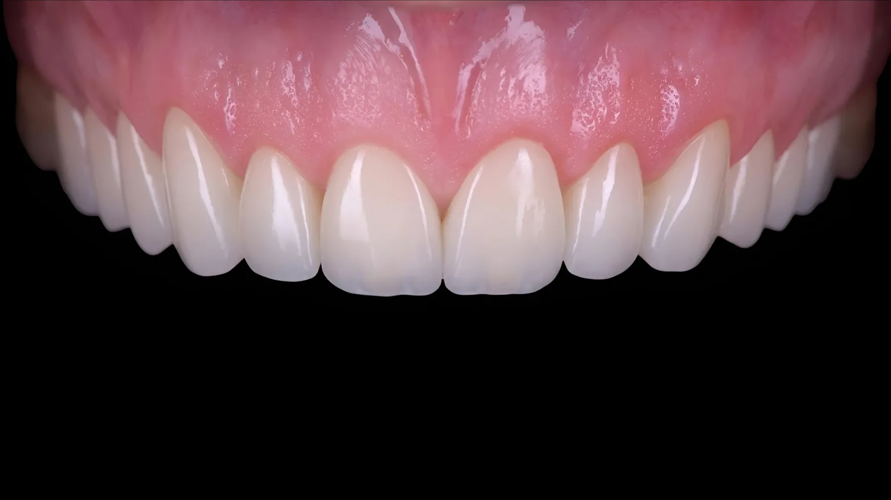
ДоПослеЭтапы лечения
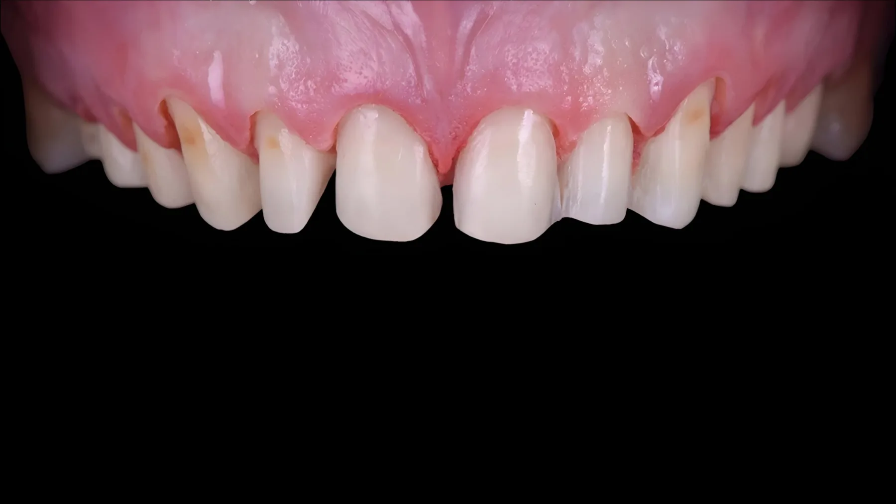
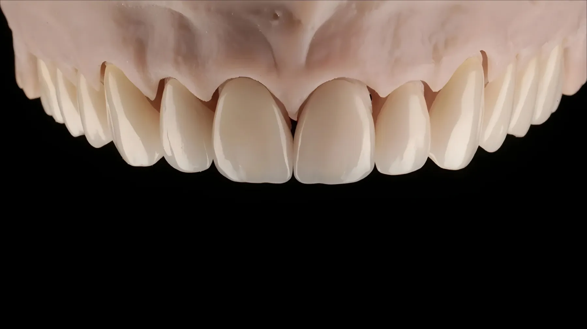
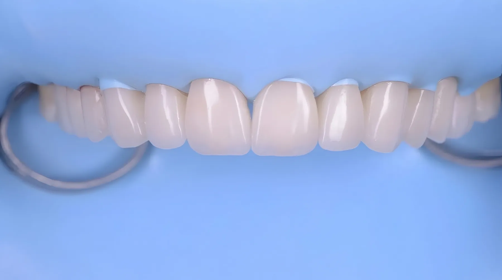
03 — Подход к лечению
Одна и та же жалоба может возникать по разным причинам, поэтому лечение не должно начинаться с заранее выбранной процедуры.
Сначала важно оценить клиническую ситуацию, определить цели лечения и обсудить возможные варианты. Пациент должен понимать, почему предлагается тот или иной подход, какие этапы предстоят и какого результата можно ожидать.
Моя задача — подобрать обоснованное решение с учётом состояния зубов, прикуса, жевательной функции и повседневных нагрузок.
04 — Образование и профессиональный путь
Я ежедневно работаю с пациентами с 2023 года. Моя клиническая практика связана с ортопедической стоматологией, эстетикой улыбки и функциональными аспектами стоматологического лечения.
Параллельно развиваюсь в области цифровой стоматологии и научных методов диагностики. Сейчас моё исследовательское направление связано с применением цифровых методов, искусственного интеллекта и больших языковых моделей при диагностике и лечении дисфункций ВНЧС.
Факультет стоматологии и медицинских технологий Санкт-Петербургского государственного университета (СПбГУ). Диплом врача-стоматолога.
Факультет математики и информатики Первого Санкт-Петербургского государственного медицинского университета имени академика И. П. Павлова (ПСПбГМУ). Диплом программиста.
Сочетаю клиническую практику с программированием: это помогает работать с цифровыми методами диагностики.
Медицинский институт СПбГУ, кафедра стоматологии. Специальность: стоматология ортопедическая.
Научная работа и подготовка к защите кандидатской диссертации. Исследование посвящено применению цифровых методов и искусственного интеллекта, включая большие языковые модели, в диагностике и лечении дисфункций ВНЧС.
05 — Технологии и инструменты
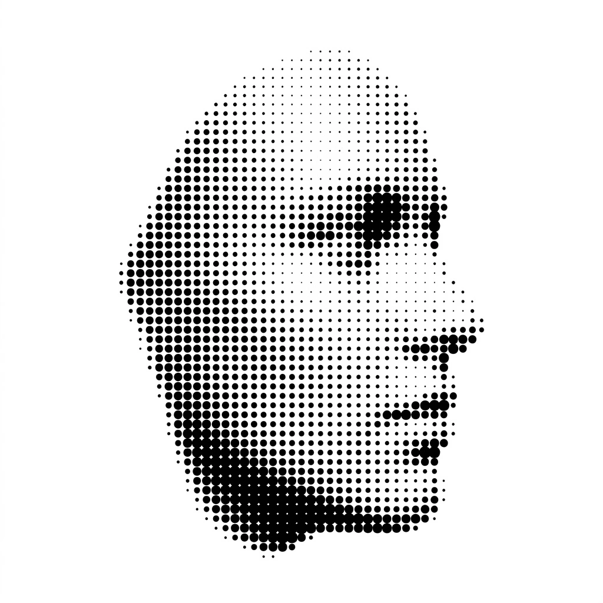
Позволяет получить трёхмерную модель зубных рядов для анализа их формы и взаимного расположения, а также планирования ортопедических конструкций. Во многих ситуациях помогает обойтись без традиционных слепочных материалов.
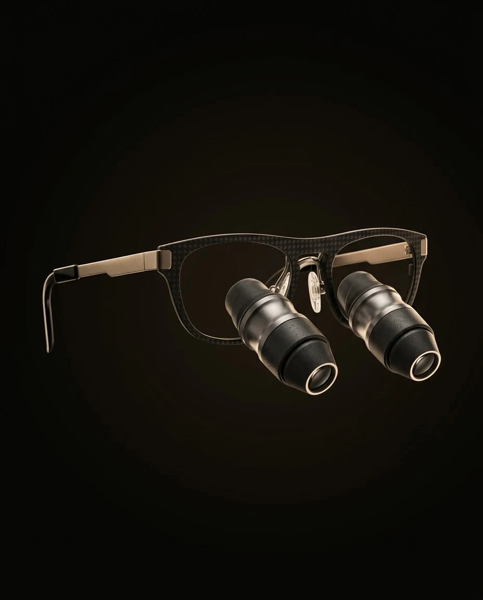
Стоматологический микроскоп и бинокулярные лупы помогают лучше видеть мелкие детали и контролировать рабочее поле во время лечения.
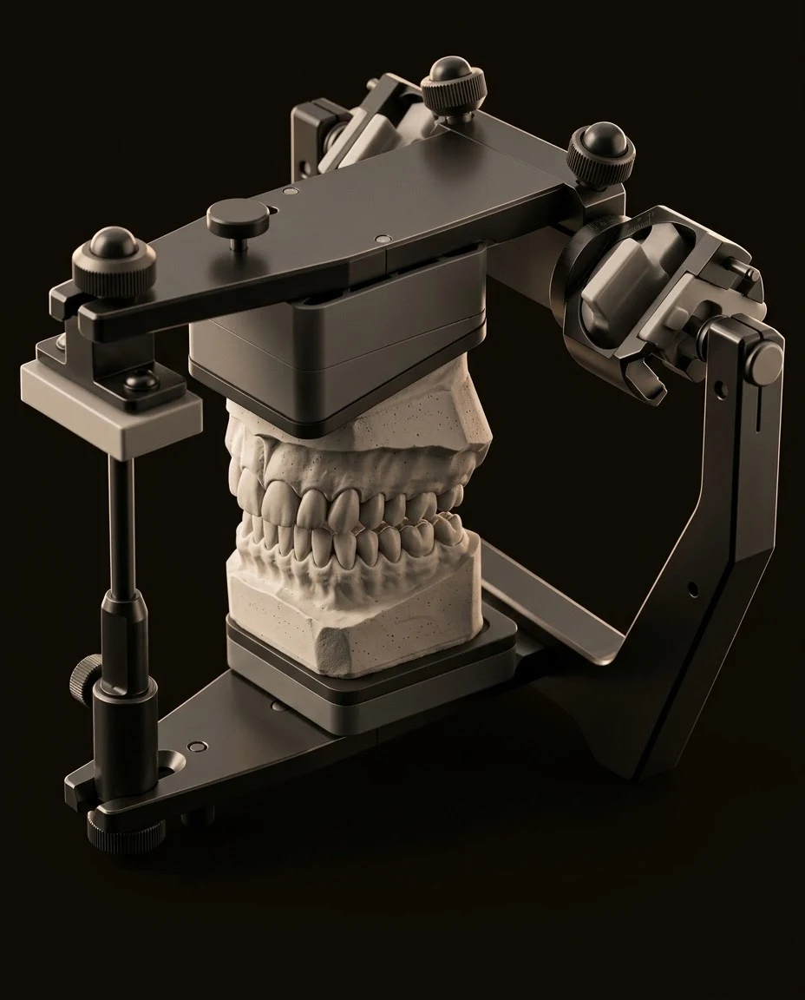
Аксиография и другие методы обследования по показаниям помогают изучать движения нижней челюсти и дополнять клиническую оценку работы зубочелюстной системы.
Технологии важны не сами по себе. Их ценность в том, какую информацию они дают и как эта информация помогает выбрать тактику лечения.
Обсудить мой случай↓06 — Отзывы пациентов
Отзывы о моей работе можно прочитать на независимой площадке ПроДокторов.
Читать отзывы на ПроДокторов↗07 — Первая консультация
Первая консультация — это возможность разобраться в ситуации и понять, какие шаги действительно нужны. Необязательно заранее знать диагноз или приходить с готовым планом лечения.
Вы рассказываете, что вас беспокоит, как давно появились симптомы и какого результата хотите достичь.
Я оцениваю состояние зубов, характер смыкания, а при соответствующих жалобах — работу жевательных мышц и ВНЧС.
При необходимости обсуждаем дополнительную диагностику. Если у вас уже есть снимки или результаты КТ/КЛКТ, возьмите их с собой.
Я объясняю, что удалось установить, какие варианты лечения могут подойти и нужны ли дополнительные обследования. Вы сможете задать вопросы и спокойно обдумать дальнейшие шаги.
08 — Частые вопросы
Напишите мне в Telegram или Instagram: обсудим ваш запрос и подберём удобное время консультации. Готовиться заранее не нужно, достаточно коротко описать, что вас беспокоит.
Да. Если вас направил другой специалист, возьмите с собой его заключение и снимки, если они есть. Это поможет сразу понять, какой этап лечения нужен, и согласовать план с вашим врачом.
Первичный осмотр и беседа безболезненны. Если потребуются дополнительные диагностические или лечебные процедуры, их необходимость и порядок проведения предварительно обсуждаются с вами.
Нет, не обязательно. Необходимость исследования зависит от жалоб и клинической ситуации. Если КТ/КЛКТ или другие снимки уже сделаны, возьмите результаты с собой.
Это зависит от диагноза, объёма работы и выбранного плана. Некоторые задачи можно решить относительно быстро, а комплексное восстановление зубов может включать несколько этапов и занимать больше времени. Возможные сроки обсуждаются после обследования.
Стоимость зависит от клинической ситуации и выбранного метода лечения. После осмотра можно обсудить варианты и составить план с ориентировочной стоимостью этапов.
Нет. Цель первой встречи — разобраться в ситуации, обсудить возможные решения и ответить на ваши вопросы. Решение о дальнейшем лечении принимается после обсуждения плана.
09 — Консультация и контакты
Если вас беспокоит состояние зубов, эстетика улыбки или работа челюстного сустава, напишите мне. Обсудим ваш запрос и определим, как лучше организовать консультацию.